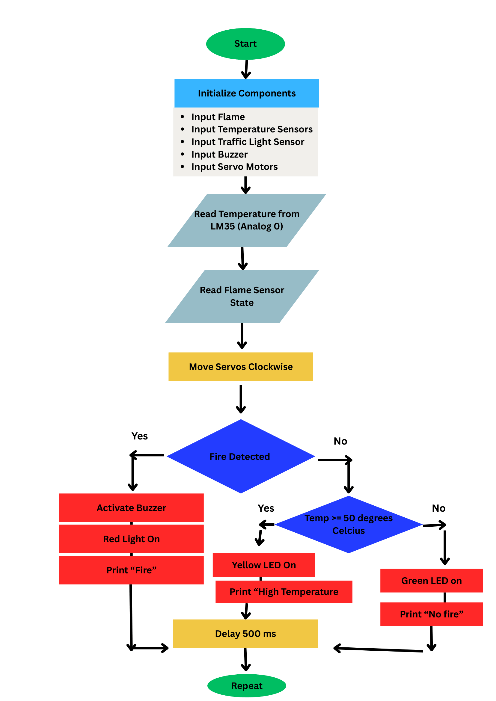
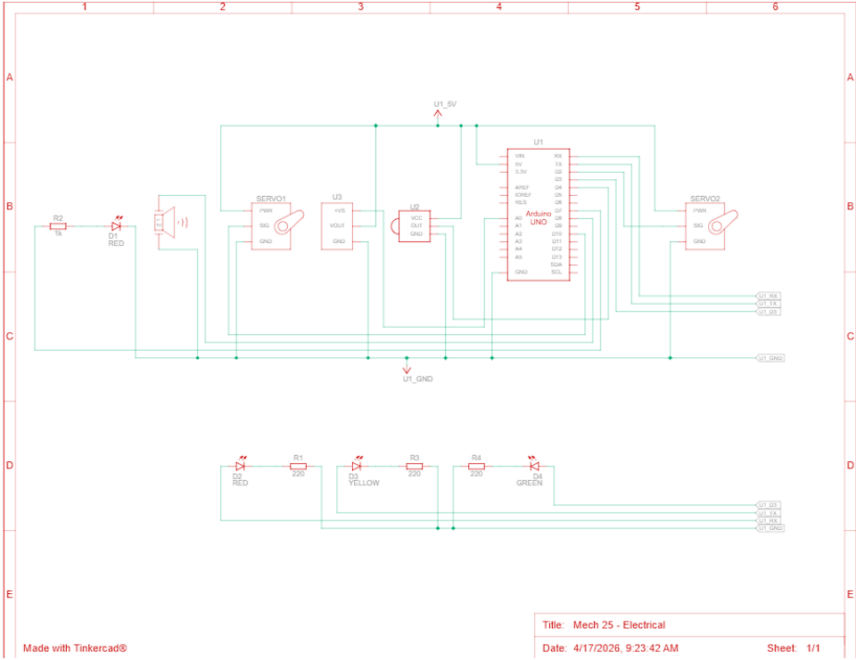

PowerPoint Presentation

Flowchart

Electrical Schematic
#include //library for servo motors
#include //math library for temperature
const int flamePin = 2; // the number of the flame pin
const int ledPin = 13; // the number of the LED pin
const int redled = 5; // initialize digital pin 5.
const int yellowled = 4; // initialize digital pin 4.
const int greenled = 3; // initialize digital pin 3.
const int buzzer = 7;//set digital IO pin of the buzzer
const int servoPin = 9;// select digital pin 9 for servomotor signal line
const int servoPin2 = 10;// select digital pin 9 for servomotor signal line
const int STOP_SPEED = 90; //Stop speed
const int CW_SPEED = 120; // Adjust for desired speed (91–180)
const int CCW_SPEED = 60; // Adjust for desired speed (0–89)
// variables will change:
int State = 0; // variable for reading status
Servo myServo; //left servo
Servo my2servo; //right servo
void setup() { //setup function
myServo.attach(servoPin); // Attach servo to pin
my2servo.attach(servoPin2); // Attach second servo to pin
myServo.write(STOP_SPEED); // Ensure servo is stopped at start
pinMode(ledPin, OUTPUT); //initialize the LED pin as an output:
pinMode(flamePin, INPUT); //initialize the pushbutton pin as an input:
pinMode(redled, OUTPUT);// set the pin with red LED as “output”
pinMode(yellowled, OUTPUT); // set the pin with yellow LED as “output”
pinMode(greenled, OUTPUT); // set the pin with green LED as “output”
pinMode(buzzer, OUTPUT);// set digital IO pin pattern, OUTPUT to be output
Serial.begin(9600); //Begin printing to the serial monitor
}
void loop(){ //loop function
double val=analogRead(4); //Raw temperature reading variable
double fenya=(val/1023)*5; //first conversion
double r=(5-fenya)/fenya*4700; //second conversion
double dat= 1/(log(r/10000) /3950 + 1/(25+273.15))-273.15; //Readable temperature reading variable
State = digitalRead(flamePin); //Read the state of the value:
if (State == LOW) { //Statement that checks if there is fire
myServo.write(STOP_SPEED); //make the first servo stop
my2servo.write(STOP_SPEED); //make the other servo stop
digitalWrite(yellowled, LOW); //turn off yellow led
digitalWrite(greenled, LOW); //turn off green led
digitalWrite(redled, HIGH); //turn on red led
tone(buzzer, 1000); //activate buzzer
Serial.println("FIRE"); //Prints fire statement to serial monitor
}
else { //Runs if no fire is detected
digitalWrite(redled, LOW); //turn off red led
noTone(buzzer); //deactivate buzzer
if (dat >= 27){ //runs if temperature is high
digitalWrite(greenled, LOW); //turn off green led
digitalWrite(yellowled, HIGH); //turn on yellow led
Serial.println("WARNING: High Temperatures Detected!"); //Prints no fire statement to serial monitor
}
else { //runs if nothing happens
myServo.write(CW_SPEED); //move servo
my2servo.write(-CW_SPEED); //move second servo
digitalWrite(yellowled, LOW); //turn off yellow led
digitalWrite(greenled, HIGH); //turn on green led
Serial.println("No Fire"); //Prints no fire statement to serial monitor
}
}
Serial.println(dat); //Prints temperature value to serial monitor
delay(500); //delay for serial monitor readability
}
////////////////////////////////////////////////////////////////////